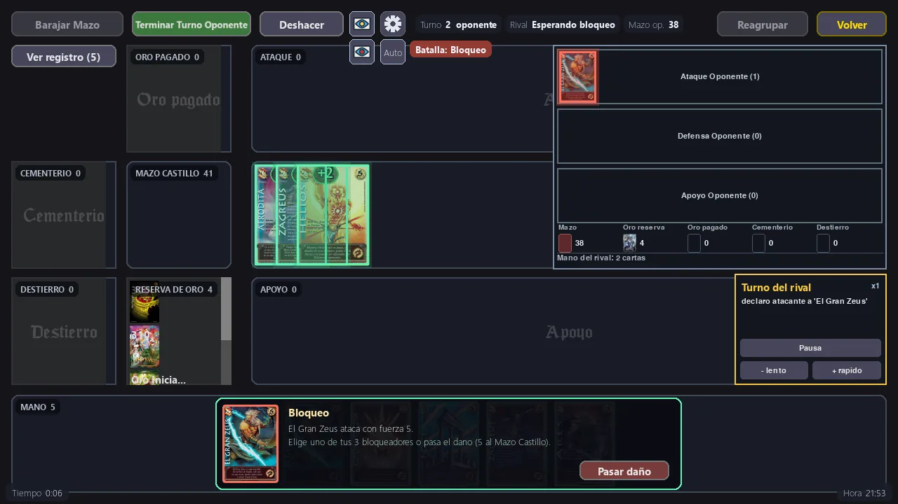
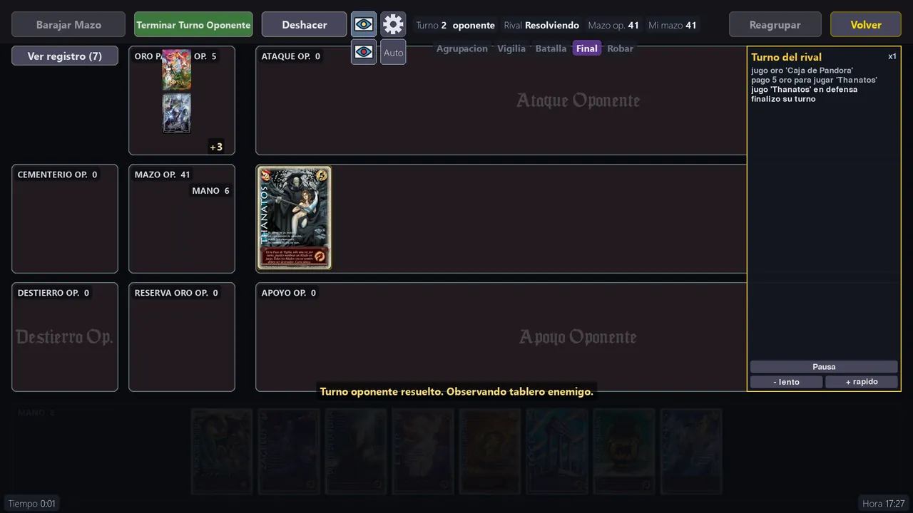
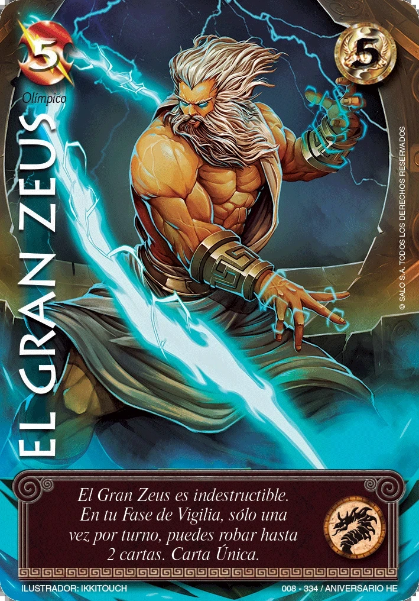

Aliado
Tus combatientes: atacan, bloquean y son los únicos que dañan el Castillo en combate. Un Aliado recién jugado necesita pasar una Agrupación antes de poder atacar.
Juego de cartas · reglas del Primer Bloque
El juego de cartas de siempre, en tu ordenador. Arma tu mazo, aprende con el tutorial, sube la Torre de Ascensión y reta a tus amigos en línea.
Myl2D.exe. No hace falta instalar nada.Las versiones siguientes llegan como actualizaciones dentro del juego: no tienes que volver a descargarlo.
Reliquias de Primer Bloque es un simulador del juego de cartas coleccionables con las reglas del Primer Bloque, hecho por fans y gratuito. Proteges tu Mazo Castillo y atacas el de tu rival hasta dejarlo sin cartas.

Cada jugador tiene un Mazo Castillo de 50 cartas, que es a la vez su vida y de donde roba. El daño que recibes se paga botando cartas de tu Castillo al Cementerio. Gana quien deja al rival sin cartas en su Castillo.
Tus combatientes: atacan, bloquean y son los únicos que dañan el Castillo en combate. Un Aliado recién jugado necesita pasar una Agrupación antes de poder atacar.
Se equipa a un Aliado para darle fuerza o habilidades. Algunas solo las puede portar cierto tipo de Aliado.
Un permanente de apoyo que se queda en la Línea de Apoyo. No bloquea, pero su efecto dura.
Un efecto de una sola vez: se juega en tu Vigilia o en la Guerra de Talismanes y después va al Cementerio.
El recurso con el que pagas todo. Bajas uno por turno al empezar la Vigilia. Tu mazo empieza con un Oro Inicial ya en la reserva.
Las cartas hacen lo que dice su texto: búsquedas en el mazo, anular y cancelar, robar el control, destierros, respuestas en el turno rival y mucho más. Con clic izquierdo mueves y atacas; con clic derecho activas la habilidad de una carta. Si alguna no hace lo que dice, pulsa H sobre ella y nos llega el aviso.
Solo contra el bot, aprendiendo con el tutorial o contra otra persona por internet o en tu misma casa.
Elige tu mazo y el del rival (o uno al azar) y juega contra el bot en cuatro dificultades: Fácil, Normal, Difícil y Experto.
El bot juega con un ritmo humano: se toma su tiempo antes de responder, guarda Oro para contestar a tus jugadas y en las dificultades bajas comete errores a propósito. En Difícil y Experto elige con cuidado qué hacer en su Vigilia. Puedes pausarlo y cambiar su velocidad.
Una escalera de rivales: un piso por mazo, del más asequible al más fuerte, que está en la cima. Cada subida empieza con 3 vidas; ganar te sube un piso y perder o abandonar cuesta una vida. Sin vidas, vuelves al piso 1.
Coronar la torre por primera vez en Experto regala el set Jade iridiscente completo: ficha, protector, icono, tapete y aura.
Siete partidas cortas con la mesa ya preparada: El tablero y los Oros, Jugar un Aliado, Atacar, Bloquear, Armas, Tótems y habilidades y Talismanes. Cada lección termina cuando haces la jugada que enseña y se desbloquean en orden.
Antes está el Códice: láminas ilustradas con cartas reales que explican cada tipo de carta, el tablero y las fases. Y la primera vez que entras, Clío te acompaña por el menú y te explica cada zona. El tutorial no cuenta para tu historial ni tus monedas.
Juega contra otra persona por internet (el anfitrión recibe un código y el rival lo escribe) o en la misma red de tu casa. Cada uno usa su propio mazo y unos dados deciden quién empieza.
Si se corta la conexión, la partida se puede retomar. Hay chat durante la partida y puedes invitar a tus amigos directamente desde el juego.
Además del juego con reglas completas existe la Mesa libre: una mesa sin reglas automáticas donde cada uno mueve sus cartas a mano, como en la mesa de verdad.

Casi 2.900 cartas de más de veinte ediciones del Primer Bloque, con sus habilidades, y un constructor que conoce las reglas de cada formato.
Los mazos oficiales de inicio, uno por raza, listos para jugar:
Si creas una cuenta nueva empiezas con estos siete y armas el resto a tu gusto.
Espada Sagrada, Helénica, Hijos de Daana, Dominios de Ra, Cruzadas, Imperio, Tierras Altas, Encrucijada, Colmillos del Inframundo, las ediciones de Aniversario, Leyendas PB 3.0 y 4.0, los Relatos de Hijos de Daana y de Dominios de Ra, Lootbox PB, Toolkit PB 2026, Victoriosas PB 2026 y promociones.
Cada partida suma: a tu perfil, a tu mazo y a tu colección de objetos para personalizar la mesa.
Tu historial guarda cada partida, con la curva de ventaja turno a turno. Las estadísticas se ven en general, por mazo, por modo y por dificultad, con tus rachas.
Logros por lo que consigues jugando. Tu perfil gana chapas según las partidas que terminas, y cada mazo sube de nivel hasta el 300 con su propia experiencia.
Gana monedas jugando y cámbialas por llaves para abrir cofres. Los cofres de colección traen protectores (la funda de tus cartas), fichas (marcan las habilidades ya usadas en el turno), tapetes para la mesa e iconos de perfil. El Cofre Arcano trae auras de entrada: un anillo de luz cuando esa carta entra en juego (hasta 3 por mazo).
Misiones diarias, semanales y mensuales que dan monedas; cuentan las partidas contra el bot en Difícil o Experto y las partidas en línea. Las recompensas y las noticias del juego llegan a tu buzón.
La tienda, el buzón y las misiones necesitan conexión. Sin conexión puedes abrir cofres con las llaves que ya tengas, pero no comprar.
Una cuenta gratuita guarda tu progreso y te conecta con otros jugadores. Es opcional: siempre puedes jugar sin conexión.
Usuario y contraseña, con un correo de recuperación: si olvidas la contraseña, el juego te envía un código de 6 cifras para crear una nueva.
Con tu cuenta puedes entrar desde otro ordenador y seguir donde lo dejaste: también recuerda qué lecciones del tutorial ya hiciste.
Agrega amigos con su código de amigo, mira quién está conectado, envíales mensajes (aunque no estén en línea), invítalos a una partida y comparte tus mazos con ellos.
Tú decides cuánto espacio ocupan las cartas. Con menos calidad el juego carga más rápido y pesa menos; el texto de las cartas se lee en las tres.

Instalación, actualizaciones y lo que suele preguntarse antes de jugar.
No se instala: descarga el .zip, descomprímelo en cualquier carpeta (por ejemplo en Documentos) y abre Myl2D.exe. Para desinstalarlo basta con borrar la carpeta.
Sí. El juego es un programa gratuito sin firma digital de pago, y Windows SmartScreen avisa con cualquier programa así. Pulsa «Más información» y después «Ejecutar de todas formas». Descárgalo siempre desde esta página.
Solo. Cuando hay una versión nueva, el juego la descarga e instala desde dentro, y al entrar te enseña una ventana con las novedades. No tienes que volver a bajar el .zip.
Sí: contra el bot, la Torre de Ascensión y el tutorial funcionan sin conexión. Internet solo hace falta para jugar en línea, la cuenta, los amigos, la tienda y las misiones.
Windows 10 u 11 de 64 bits y unos 400 MB libres con la calidad Baja; la Media y la Completa ocupan más. Puedes cambiar la resolución y el tamaño de la interfaz en Ajustes.
No. Es un proyecto de fans sin ánimo de lucro, gratis y sin anuncios. Las monedas de la tienda se ganan jugando.
En plena partida, pon el ratón sobre la carta y pulsa H. Puedes escribir qué esperabas y el aviso nos llega para corregirla.
Sigue las reglas del Primer Bloque y sus aclaraciones, con dos reglas de la casa: todos los turnos se roba (también el primero) y los mazos no tienen un mínimo de Aliados.
Versión 1.3.2 · 8 nov 2026
Versión 1.3.1 · 8 nov 2026
Versión 1.3.0 · 8 nov 2026